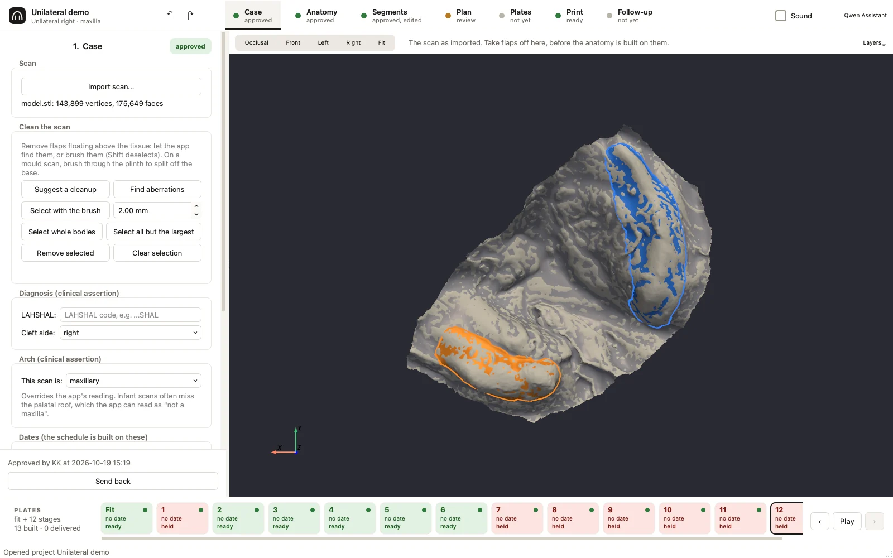
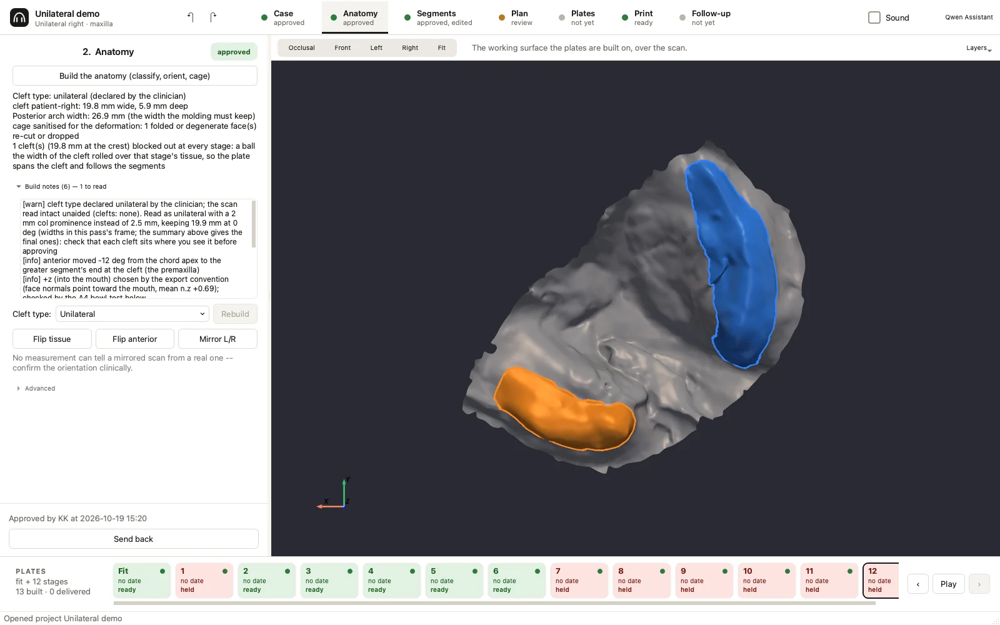
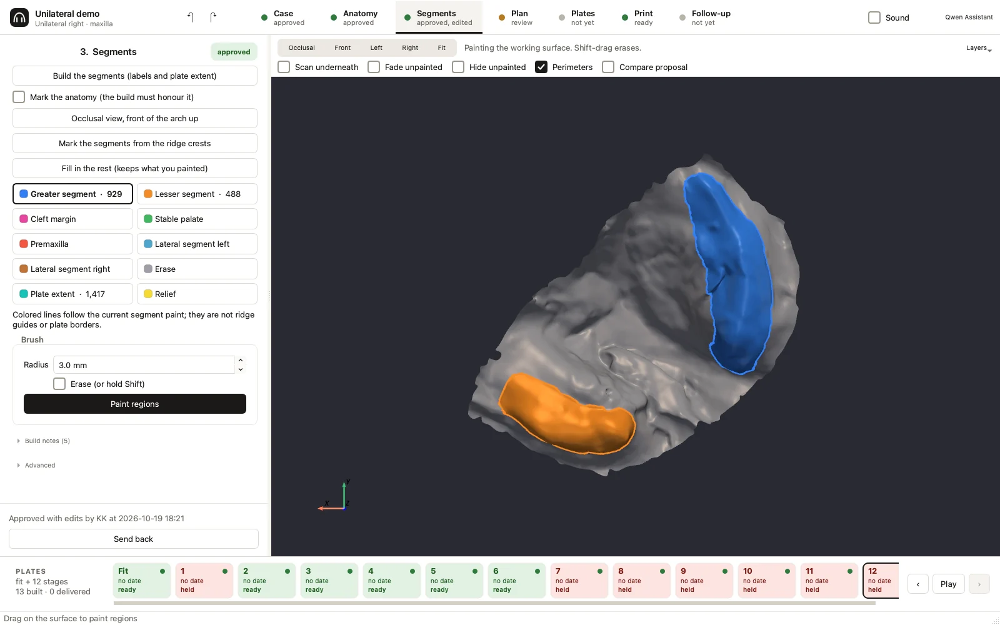
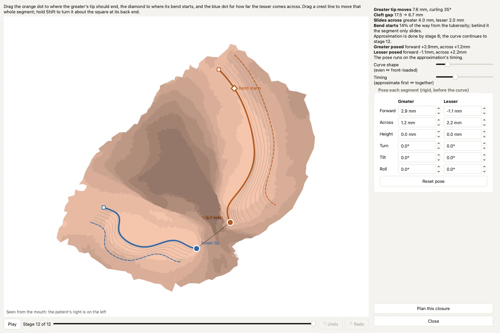
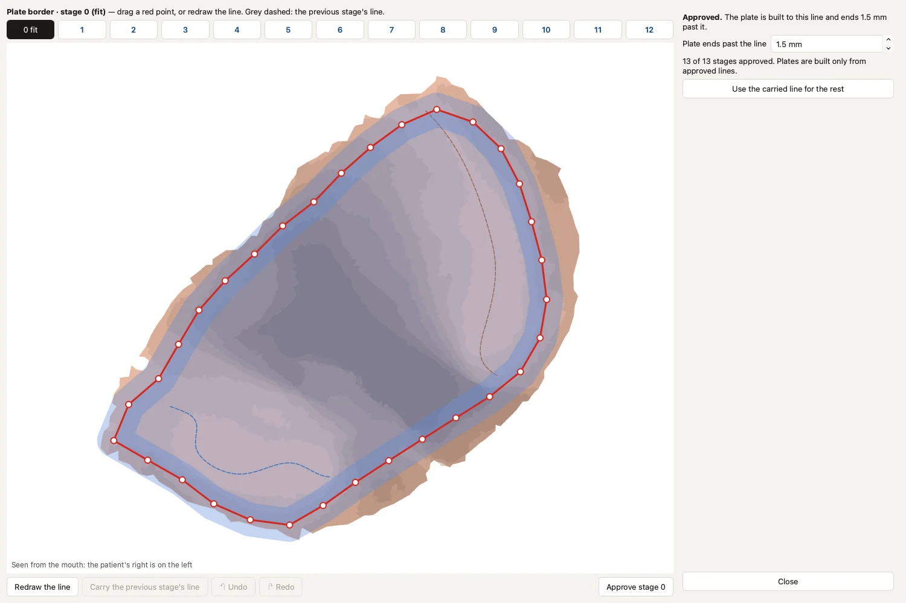
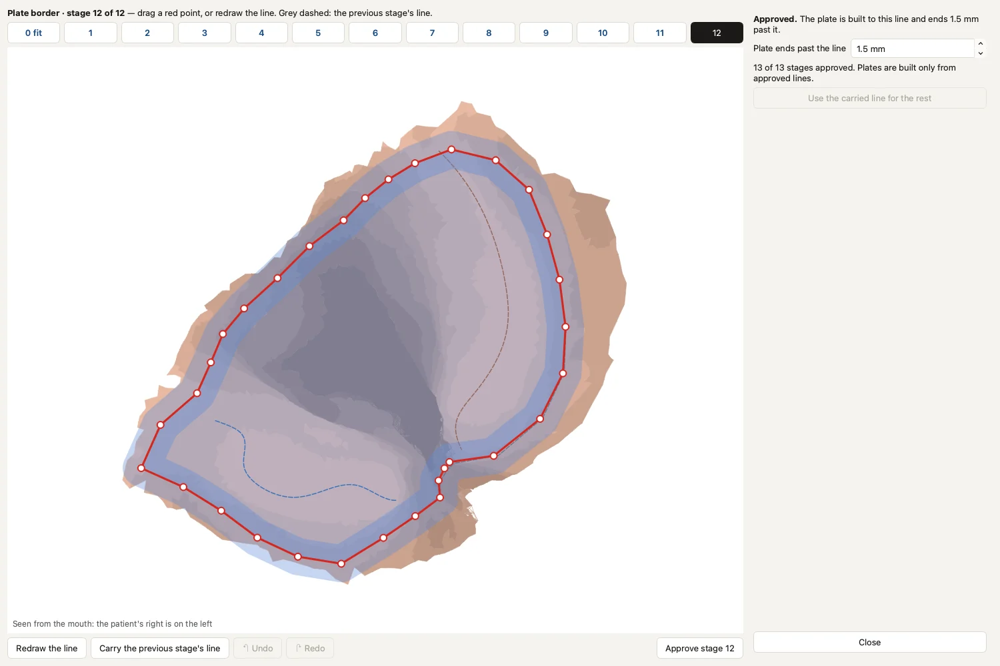
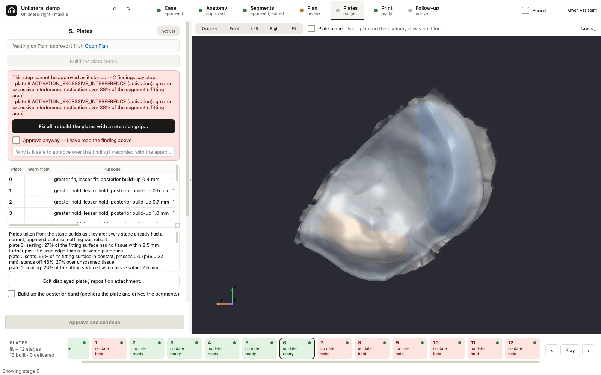
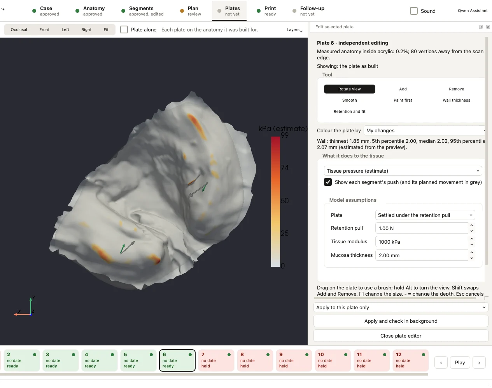
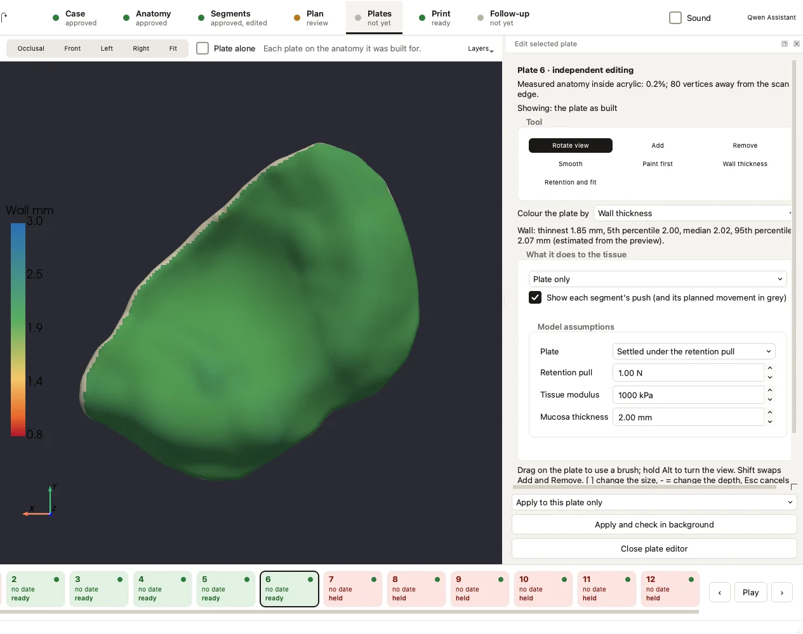

One case from scan to plates, step by step: what you see at each step, what to do, and what to check before you approve.
About these pictures. Every screenshot is from the current development build of the app, run on a de-identified scan of a stone model of one right unilateral cleft. No names or dates appear. Some features shown here come with the next update. MoldStudio is a research alpha and not a medical device: check and fit every plate yourself.
Before you start
Finding your way around
Along the top is the step rail: Case, Anatomy, Segments, Plan, Plates, Print, Follow-up. Each step shows its state: not yet, review, approved, building, failed, or stop when a finding needs attention. On the left, the inspector shows the open step, with Approve and continue and Send back at its foot. Above the 3D view, the viewport bar has Occlusal, Front, Left and Right views and the step's display options. Along the bottom, the plate strip shows every planned plate, its date and its state.
You approve one step at a time, and the app builds the next step as soon as you do. If you change something upstream, the approvals that depended on it are withdrawn, and the step says which ones.
Step 0
Start a case
You see
The cases worked on on this Mac, each with its step states, and a New case panel.
You do
Choose the scan and give the case a name that does not identify the patient. If you have used the same scan file before, the app offers to bring over the cleaning, the case record and the cleft type. It never brings over the painting.
De-identify file and folder names before importing: the case records where the scan came from.
Step 1
Case

The Case step on the example case, a scan of a stone model of a right unilateral cleft. The cleaning tools and the case record are on the left.
You see
The scan in 3D, the cleaning tools, and the case record: diagnosis, arch, dates, painter and notes.
You do
Check that the orientation and size look right.
Accept or decline the suggested cleanup. On a stone model it offers to remove the base, the plinth walls and loose specks, with a preview of exactly what would go.
Remove any remaining flaps with Find aberrations or the brush.
Enter the diagnosis and the dates; the plate schedule is built from them.
Approve.
Undo and redo sit on the step rail and cover cleaning, segment rebuilds, marks, borders and arm sites. Each tooltip says what will be undone.
Step 2
Anatomy

The anatomy reads a unilateral cleft on the patient's right and gives its width and the posterior arch width. Here the clinician declared the cleft type.
You see
The classifier's reading (cleft type and side, measurements), its findings, the fitted frame and the working surface.
You do
Check the cleft type and side against the patient.
If the type is wrong, declare it and rebuild. The app then looks for a reading of that type that passes every check, or stops. It never invents a cleft.
If the side disagrees with the case record, confirm it clinically and use Mirror L/R.
Approve.
Building Anatomy again replaces the working surface and any painting. The app asks before it does.
Step 3
Segments

The greater segment (blue) and the lesser segment (orange), painted on the working surface.
You see
The painted segments, the cleft margin, the stable palate and the plate extent.
You do
Paint or erase where the proposal is wrong, or mark the segments from the ridge crests.
Use Fill in the rest to complete the painting around your strokes without changing them.
Approve.
Rebuilding the segments is one undo step: Undo brings back exactly the painting it replaced.
Step 4
Plan: close the cleft
For a unilateral cleft, the Plan step has two windows: 1 Set the movement, then 2 Draw the plate borders.

The Movement window at stage 12 of 12. Dashed lines are the crests at the start, solid lines the crests at the end, and grey lines the stages between. The cleft gap closes from 17.5 to 6.7 mm. The pose table shows the greater moved 2.9 mm forward and 1.2 mm across, and the lesser 1.1 mm back and 2.2 mm across.
You do
Drag the orange dot to where the greater segment's tip should end, the diamond to where its curve starts, and the blue dot to set how far the lesser comes across.
Shape the curve (even or front-loaded) and the timing (approximate first, or together).
Drag a crest line to move a whole segment, or hold Shift to turn it about its back end. The pose table takes exact values.
Press Play to watch the stages, then Plan this closure.
The app does
Moves both segments toward each other while the greater curves over into the arch. The curve is graded from the tuberosity to the tip. Each part of the scan follows the segment it belongs to, so the cleft lining does not fold. The app reports the travel per stage, the cleft gap and the back width. If you close the window without planning, it reopens with the case.

Draw the plate borders: the red line is where the fit plate ends, drawn on that stage's tissue. The blue band shows the plate as built, 1.5 mm past the line.

Stage 12. The arch has closed, and the line follows the new tissue. The grey dashed line is the previous stage's border.
You do
Draw the fit plate's border, then use Use the carried line for the rest, or redraw a stage's line.
Drag a red point to adjust a line, and approve each stage's border.
The app does
Cuts each plate to its line plus the allowance and rounds the edge. A piece cut off inside the line is a stop, because part of the device may be missing.
Back in the Plan step, each stage shows its movement (pivot step and travel since the start for each segment), its built plate over the predicted tissue, and its verdicts. Stages 1 and 7 to 12 are held by findings that need review.
For other clefts, the Plan step uses key poses: a list of phases, each with a move, grow or hold purpose per segment. Plates already made never change, and restaging keeps delivered plates as they are.
Step 5
Plates and the plate editor
Each approved stage's plate builds in the background while you keep working. Every plate gets a print verdict (one watertight piece, thinnest wall against the 1.0 mm print floor) and a fit verdict (how it seats and whether it activates as planned). A measurement that cannot be read says NOT MEASURED; it is never a pass.

The Plates step lists each plate's purpose and seating. Here two findings stop the step (excessive interference on plates 8 and 9). The app offers a fix, or approval over the finding with a written reason.

Edit selected plate on plate 6: the estimated tissue pressure under the plate, with each segment's push (green) against its planned movement (grey). The tissue model's stiffness, mucosa thickness and retention pull are assumptions, shown so you can change them.

The same plate coloured by wall thickness: thinnest 1.85 mm, median 2.02 mm. Anything under the 1.0 mm print floor would show red.
Editor tools
Add, Remove, Smooth: brushes on a depth map of the plate, so an edit never folds the surface.
Paint first: paint several changes, then apply them together.
Wall thickness: uniform or graded, previewed before you apply it.
Retention and fit: add arms (placed by the app or at sites you pick), or Seat closely.
Coming to the editor: Cut out, which removes a painted region such as a window, and Plate edge, which grows or shrinks the outline where the stage has a drawn border.
You do
Read the findings. A held plate shows why.
Edit a plate if needed, apply it to this plate only, or to this plate and the later plates not yet given to the patient, then Apply and check in background.
Each plate lists the edits it carries, and each one can be removed.
Approve each plate's review. Approving over a hold needs a written reason, which is kept.
When a plate is given to the patient, mark it delivered: it is then locked.
New cases build plates without retention arms; add them in the editor. Edits carried to later plates are replayed on each plate's own tissue, after its border cut.
Step 6
Print
You see
The route (the plates themselves, or thermoforming models), the printer, the resin or sheet, the reviewed plates available, and the job layout.
You do
Choose the route and profiles, then Prepare print jobs. Only plates whose review is approved can be printed.
Open the print folder and read the job sheet, including any holds.
Import build.3mf or build.stl into your printer's software. Supports are kept off the fitting surface and the rim.
Step 7
Follow-up
You see
Three tabs. Visit imports a new scan; Deviation shows a map of predicted against actual; Response shows the cleft gap over time.
You do
Import the visit's scan and choose the stage it should match; it is registered on the stable palate.
Read the deviation against the scan's own floor of about 0.9 mm; smaller differences are not findings.
Record the visit, or adopt the scan and re-plan from it. Delivered plates stay as they are.
Good habits
Working safely with MoldStudio
Your work is kept
Unsaved edits are saved as recovery points, and the app offers them back when you reopen the case. File › Save is still the checkpoint.
Long jobs can be cancelled
Building a step shows a Cancel button. It stops at the next checkpoint, and nothing is adopted.
Updates install when you quit
When a new release is out, MoldStudio offers it with its notes. Choose Install when I quit. If it changes how plates are built, it says so: open cases will need re-approval, so finish the case first.
Undo
Edit › Undo, or the arrows on the step rail, reverts the last thing you did: a cleanup, a paint stroke, a segment rebuild, a border, an arm site or a stage edit. The Movement window has its own undo. Undo does not bring back an approval that was withdrawn.